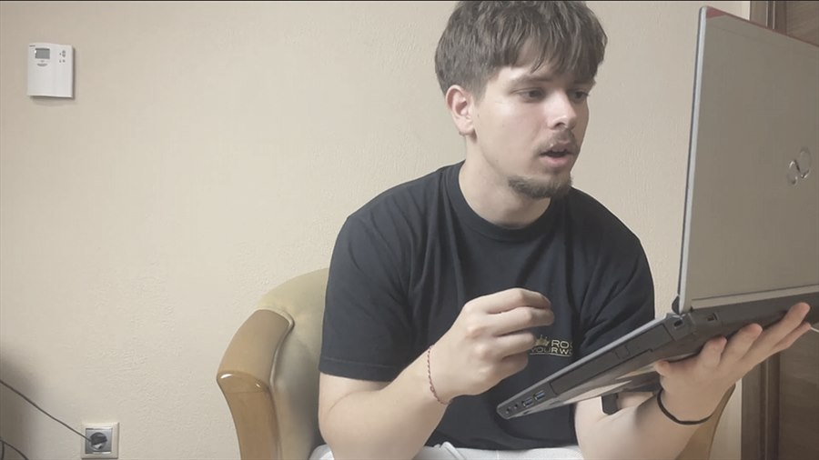
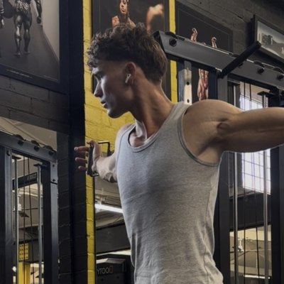
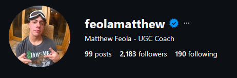
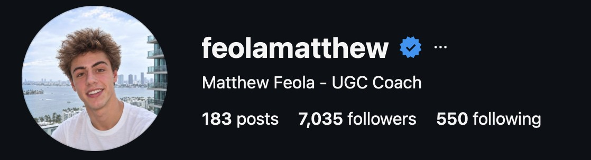
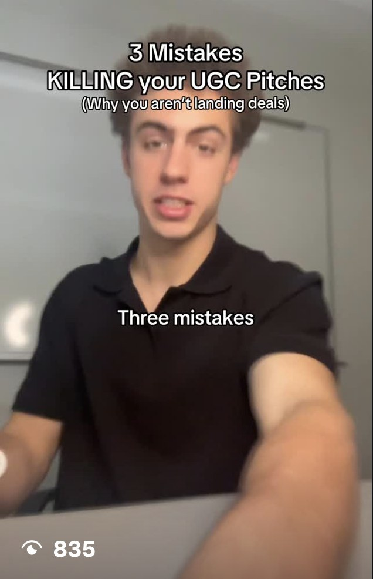
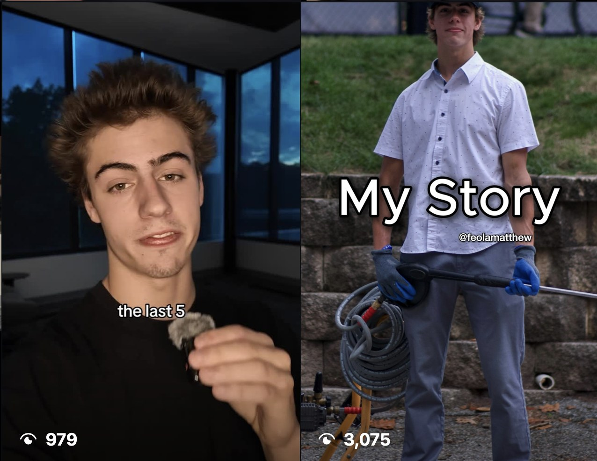
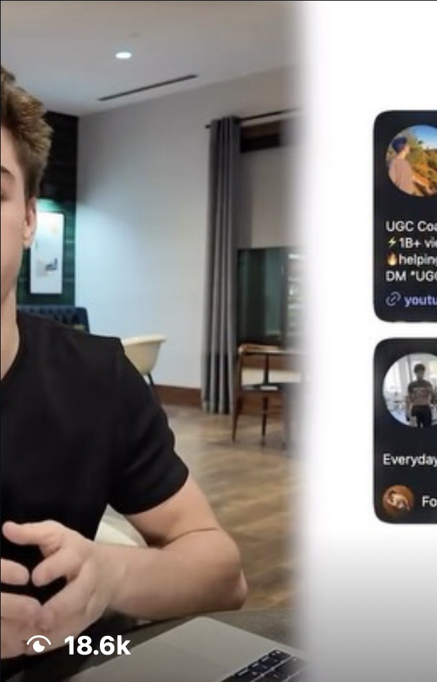
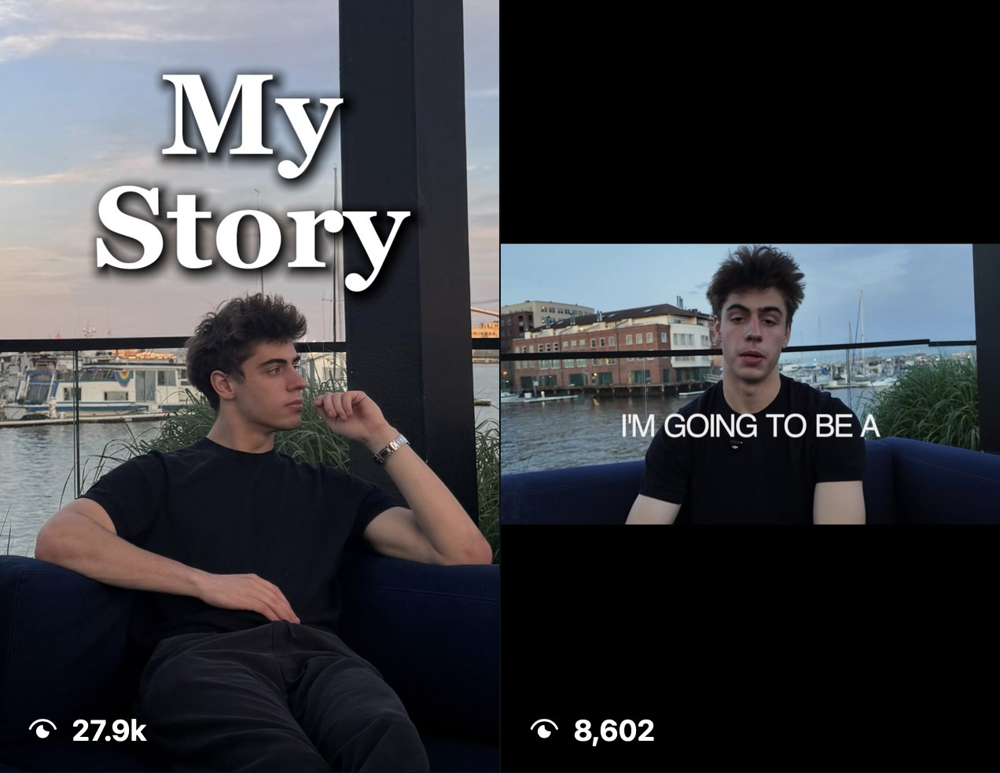

Use the right content system.Make content simple again.

RAW DESIGNED
DESIGNED
-
127k followers $25k/mo+LJ Elizardescaling barber businesses
-
7,035 followers $30k/mo+Matthew FeolaUGC coach
-

3,535 followers $10k/mo+Arden Walmsleyfitness coach -
58.8k followers $100k/mo+Josh Changfounder @changconsulting.co@infoteam.io @clonevid.ai
-
 84.7k followers
$20k/mo+
Kelly Cocaafitness coach
84.7k followers
$20k/mo+
Kelly Cocaafitness coach
How does the Content Engine work?
-
Brand identity
We build the look, tone and positioning around your real story and personality.
-
Filming
You film once, with a plan: one long-form video and a few reels shot on purpose.
-
YouTube long-form
We take care of 100% of the editing of the long form.
-
Short-form
The long video is cut into clips, and the filmed reels are edited to match.
Spend less time filming & get more content
Build a personal brand that feels like you.
You already did the hard part — showing up and saying something real. I handle the rest.
Getting to know your story
We dig into your story and your ICP — who you're really talking to and why they should care — so every piece of content we make actually sounds like you and lands with the right people.
Every second, designed
Every second of visual design, every cut, every frame is made to count — built to hit an emotion first, because content that makes someone feel something is what earns their trust, and trust is what turns a viewer into a client.
Editing
We're on deadline, every time, and we own 100% of the video editing process from start to finish — so you get your time back to scale your business instead of babysitting your content.
The story your client needs to hear before buying.
I'm Sotiris — I work with coaches and founders who know they can level up their personal brand through creative visual design, and find their ICPs through the internet.
I've worked with coaches pulling in $100k+ a month, helping them tighten up their positioning, visuals, and content so their personal brand actually pulls its weight.
Here's the thing — at that level, it's rarely a "content" problem. It's a clarity problem. Visuals that don't match, a message that's all over the place, output that looks like everyone else's. End result: people who are genuinely great at what they do, staying invisible online.
That's the gap I close — through editing and visual design that digs out what's actually different about you, then turns it into content that works for you around the clock.
From 2,183 to 7,035 followers — and 100+ leads.
Matthew Feola came to me at 2,183 followers. The content we made together pulled in over 100 leads and helped grow him to 7,035 — here's him telling it.
"Sotiris was my editor for my personal brand and, honestly, the best editor I've ever had. Super quick turnaround — genuinely less than six hours, always under 24. The quality was insane, and you don't even need to give him a reference video. Unlike most editors I've worked with, he just gets what you want; after a couple of videos he already had a great idea of the style I was going for. Working with him was an amazing experience — I'd recommend it to anyone."




Before we started working together. Edit this text.


After we started working together. Edit this text.
Same creator, same platform — the difference is the edit. These went out after we started working together.
See if you're a good fit for this offer.
Six quick questions, about a minute. You'll get an honest read on whether done-for-you video design makes sense for you right now, and what to do next either way.